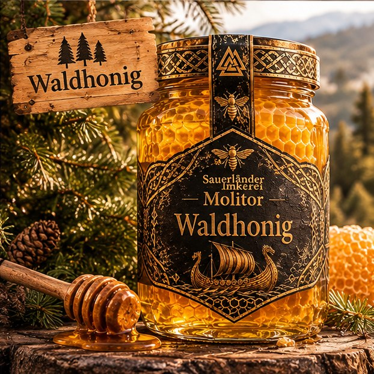
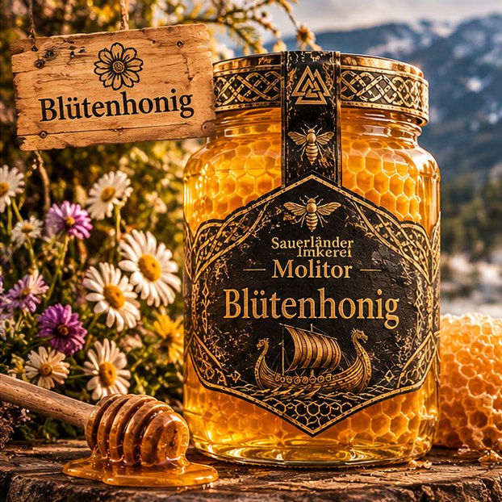
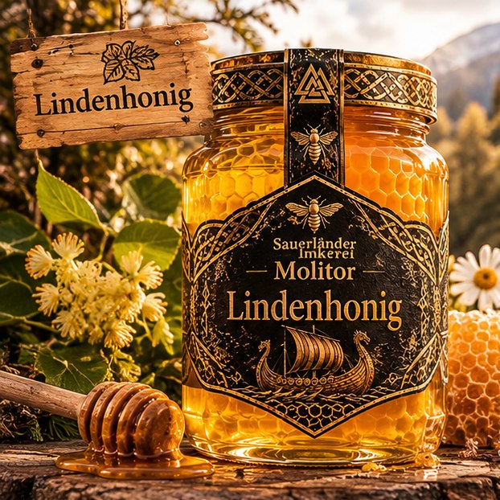

Waldhonig
Dunkel und würzig, aus der Waldtracht im Sauerländer Wald.
ab 4,99 €Vier Sorten aus eigener Imkerei: von hell und mild bis dunkel und kräftig. Von Hand geerntet und abgefüllt von Imker Molitor.

Dunkel und würzig, aus der Waldtracht im Sauerländer Wald.
ab 4,99 €
Cremig und herb, mit dem typischen Aroma der Heideblüte.
ab 5,99 €
Blumig und fein, aus Wildblumen und Wiesen rund um die Imkerei.
ab 4,99 €
Hell, mild und mit frischer Note aus der Lindenblüte.
ab 5,99 €Preise inkl. MwSt. · 250-g-Glas · Grundpreis 19,96 €/kg (Wald- und Blütenhonig) bzw. 23,96 €/kg (Heide- und Lindenhonig) · 500-g-Gläser im Hofladen
Unsere Bienen leben mitten im Sauerländer Wald. Sie sammeln Nektar von Wildblumen, Linde und Heide und finden im Wald Honigtau für unseren Waldhonig. So schmeckt jede Sorte nach der Landschaft, aus der sie kommt.
Bestellen Sie im E-Shop: Ab 39 € liefern wir gratis. Oder holen Sie Ihren Honig im Hofladen in Winterberg ab, täglich von 10 bis 18 Uhr.
Als Geschenk gibt es unser Honig-Trio mit drei Sorten.